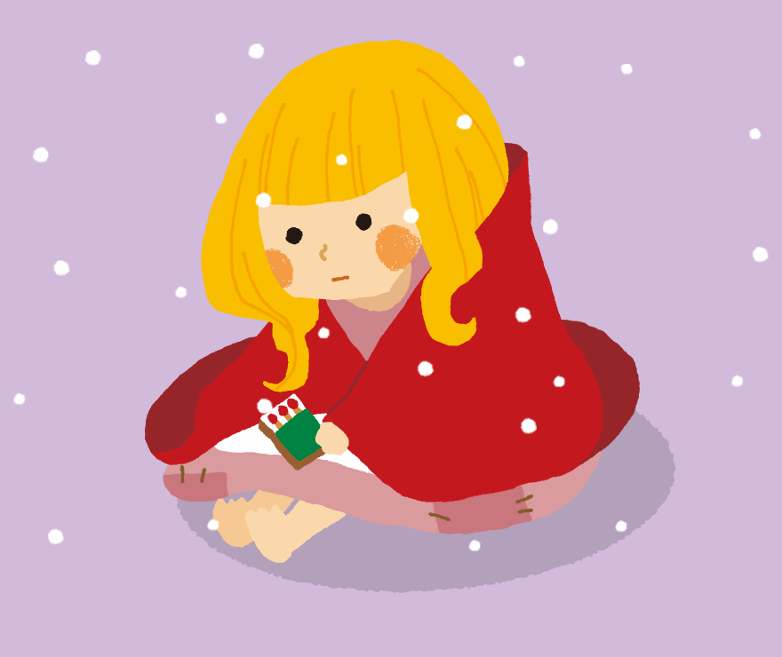

| アンデルセンの童話1（雪の女王 ＆ マッチ売りの少女） | |
| Hans Christian Andersen | |
| blueart (2014) | |
目次
雪の女王
第七のお話
雪の女王のお城は、はげしくふきたまる雪が、そのままかべになり、窓や戸口は、身をきるような風で、できていました。そこには、百いじょうの広間が、じゅんにならんでいました。
それはみんな雪のふきたまったものでした。
いちばん大きな広間はなんマイルにもわたっていました。
つよい極光（オーロラ）がこの広間をもてらしていて、それはただもう、ばか大きく、がらんとしていて、いかにも氷のようにつめたく、ぎらぎらして見えました。
たのしみというものの、まるでないところでした。
あらしが音楽をかなでて、ほっきょくぐまがあと足で立ちあがって、気どっておどるダンスの会もみられません。
わかい白ぎつねの貴婦人のあいだに、ささやかなお茶の会がひらかれることもありません。
雪の女王の広間は、ただもうがらんとして、だだっぴろく、そしてさむいばかりでした。
極光のもえるのは、まことにきそく正しいので、いつがいちばん高いか、いつがいちばんひくいか、はっきり見ることができました。
このはてしなく大きながらんとした雪の広間のまん中に、なん千万という数のかけらにわれてこおった、みずうみがありました。
われたかけらは、ひとつひとつおなじ形をして、これがあつまって、りっぱな美術品になっていました。
このみずうみのまん中に、お城にいるとき、雪の女王はすわっていました。
そしてじぶんは理性の鏡のなかにすわっているのだ、この鏡ほどのものは、世界中さがしてもない、といっていました。
カイはここにいて、さむさのため、まっ青に、というよりは、うす黒くなっていました。
それでいて、カイはさむさを感じませんでした。
というよりは、雪の女王がキスして、カイのからだから、さむさをすいとってしまったからです。
そしてカイのしんぞうは、氷のようになっていました。
カイは、たいらな、いく枚かのうすい氷の板を、あっちこっちからはこんできて、いろいろにそれをくみあわせて、なにかつくろうとしていました。
まるでわたしたちが、むずかしい漢字をくみ合わせるようでした。
カイも、この上なく手のこんだ、みごとな形をつくりあげました。
それは氷のちえあそびでした。カイの目には、これらのものの形はこのうえなくりっぱな、この世の中で一ばん たいせつなもののようにみえました。
それはカイの目にささった鏡のかけらのせいでした。
カイは、形でひとつのことばをかきあらわそうとおもって、のこらずの氷の板をならべてみましたが、自分があらわしたいとおもうことば、
すなわち、「永遠」ということばを、どうしてもつくりだすことはできませんでした。
でも、女王はいっていました。
「もしおまえに、その形をつくることがわかれば、からだも自由になるよ。
そうしたら、わたしは世界ぜんたいと、あたらしいそりぐつを、いっそくあげよう。」
けれども、カイには、それができませんでした。
「これから、わたしは、あたたかい国を、ざっとひとまわりしてこよう。」と、雪の女王はいいました。
「ついでにそこの黒なべをのぞいてくる。」黒なべというのは、エトナとかヴェスヴィオとか、いろんな名の、火をはく山のことでした。
「わたしはすこしばかり、それを白くしてやろう。ぶどうやレモンをおいしくするためにいいそうだから。」
こういって、雪の女王は、とんでいってしまいました。
そしてカイは、たったひとりぼっちで、なんマイルというひろさのある、氷の大広間のなかで、氷の板を見つめて、じっと考えこんでいました。
もう、こちこちになって、おなかのなかの氷が、みしりみしりいうかとおもうほど、じっとうごかずにいました。
それをみたら、たれも、カイはこおりついたなり、死んでしまったのだとおもったかもしれません。
ちょうどそのとき、ゲルダは大きな門を通って、その大広間にはいってきました。
そこには、身をきるような風が、ふきすさんでいましたが、ゲルダが、ゆうべのおいのりをあげると、ねむったように、しずかになってしまいました。
そして、ゲルダは、いくつも、いくつも、さむい、がらんとしたひろまをぬけて、――とうとう、カイをみつけました。
ゲルダは、カイをおぼえていました。で、いきなりカイのくびすじにとびついて、しっかりだきしめながら、
「カイ、すきなカイ。ああ、あたしとうとう、みつけたわ。」と、さけびました。
けれども、カイは身ゆるぎもしずに、じっとしゃちほこばったなり、つめたくなっていました。
そこで、ゲルダは、あつい涙を流して泣きました。
それはカイのむねの上におちて、しんぞうのなかにまで、しみこんで行きました。
そこにたまった氷をとかして、しんぞうの中の、鏡のかけらをなくなしてしまいました。
カイは、ゲルダをみました。ゲルダはうたいました。
ばらのはな さきてはちりぬ
おさな子エス やがてあおがん
すると、カイはわっと泣きだしました。
カイが、あまりひどく泣いたものですから、ガラスのとげが、目からぽろりとぬけてでてしまいました。
すぐカイは、ゲルダがわかりました。そして、大よろこびで、こえをあげました。
「やあ、ゲルダちゃん、すきなゲルダちゃん。――いままでどこへいってたの、そしてまた、ぼくはどこにいたんだろう。」こういって、カイは、そこらをみまわしました。
「ここは、ずいぶんさむいんだなあ。なんて大きくて、がらんとしているんだろうなあ。」
こういって、カイは、ゲルダに、ひしととりつきました。ゲルダは、うれしまぎれに、泣いたり、わらったりしました。それがあまりたのしそうなので、氷の板きれまでが、はしゃいでおどりだしました。
そして、おどりつかれてたおれてしまいました。そのたおれた形が、ひとりでに、ことばをつづっていました。
それは、もしカイに、そのことばがつづれたら、カイは自由になれるし、そしてあたらしいそりぐつと、のこらずの世界をやろうと、雪の女王がいった、そのことばでした。
ゲルダは、カイのほおにキスしました。
みるみるそれはぽおっと赤くなりました。
それからカイの目にもキスしました。
すると、それはゲルダの目のように、かがやきだしました。カイの手だの足だのにもキスしました。
これで、しっかりしてげんきになりました。もうこうなれば、雪の女王がかえってきても、かまいません。
だって、女王が、それができればゆるしてやるといったことばが、ぴかぴかひかる氷のもんじで、はっきりとそこにかかれていたからです。
さて、そこでふたりは手をとりあって、その大きなお城からそとへでました。
そして、うちのおばあさんの話だの、屋根の上のばらのことなどを、語りあいました。
ふたりが行くさきざきには、風もふかず、お日さまの光がかがやきだしました。
そして、赤い実のなった、あの木やぶのあるところにきたとき、そこにもう、トナカイがいて、ふたりをまっていました。
そのトナカイは、もう一ぴきのわかいトナカイをつれていました。
そして、このわかいほうは、ふくれた乳ぶさからふたりのこどもたちに、あたたかいおちちを出してのませてくれて、そのくちの上にキスしました。
それから二ひきのトナカイは、カイとゲルダをのせて、まずフィンランドの女のところへ行きました。
そこでふたりは、あのあついへやで、じゅうぶんからだをあたためて、うちへかえる道をおしえてもらいました。
それからこんどは、ラップランドの女のところへいきました。
その女は、ふたりにあたらしい着物をつくってくれたり、そりをそろえてくれたりしました。
トナカイと、もう一ぴきのトナカイとは、それなり、ふたりのそりについてはしって、国境までおくってきてくれました。そこでは、はじめて草の緑がもえだしていました。
カイとゲルダとは、ここで、二ひきのトナカイと、ラップランドの女とにわかれました。
「さようなら。」と、みんなはいいました。
そして、はじめて、小鳥がさえずりだしました。
森には、緑の草の芽が、いっぱいにふいていました。
その森の中から、うつくしい馬にのった、わかいむすめが、赤いぴかぴかするぼうしをかぶり、くらにピストルを二ちょうさして、こちらにやってきました。
ゲルダはその馬をしっていました。（それは、ゲルダの金きんの馬車をひっぱった馬であったからです。）そして、このむすめは、れいのおいはぎのこむすめでした。
この女の子は、もう、うちにいるのがいやになって、北の国のほうへいってみたいとおもっていました。
そしてもし、北の国が気にいらなかったら、どこかほかの国へいってみたいとおもっていました。
このむすめは、すぐにゲルダに気がつきました。ゲルダもまた、このむすめをみつけました。
そして、もういちどあえたことを、心からよろこびました。
「おまえさん、ぶらつきやのほうでは、たいしたおやぶんさんだよ。」と、そのむすめは、カイにいいました。
「おまえさんのために、世界のはてまでもさがしにいってやるだけのねうちが、いったい、あったのかしら。」
けれども、ゲルダは、そのむすめのほおを、かるくさすりながら、王子と王女とは、あののちどうなったかとききました。
「あの人たちは、外国へいってしまったのさ。」と、おいはぎのこむすめがこたえました。
「それで、からすはどうして。」と、ゲルダはたずねました。
「ああ、からすは死んでしまったよ。」と、むすめがいいました。
「それでさ、おかみさんがらすも、やもめになって、黒い毛糸の喪章を足につけてね、ないてばかりいるっていうけれど、うわさだけだろう。
さあ、こんどは、あれからどんな旅をしたか、どうしてカイちゃんをつかまえたか、話しておくれ。」
そこで、カイとゲルダとは、かわりあって、のこらずの話をしました。
「そこで、よろしく、ちんがらもんがらか、でも、まあうまくいって、よかったわ。」と、むすめはいいました。
そして、ふたりの手をとって、もしふたりのすんでいる町を通ることがあったら、きっとたずねようと、やくそくしました。
それから、むすめは馬をとばして、ひろい世界へでて行きました。でも、カイとゲルダとは、手をとりあって、あるいていきました。
いくほど、そこらが春めいてきて、花がさいて、青葉がしげりました。
お寺の鐘がきこえて、おなじみの高い塔と、大きな町が見えてきました。
それこそ、ふたりがすんでいた町でした。
そこでふたりは、おばあさまの家の戸口へいって、かいだんをあがって、へやへはいりました。
そこではなにもかも、せんとかわっていませんでした。柱どけいが「カッチンカッチン」いって、針がまわっていました。
けれど、その戸口をはいるとき、じぶんたちが、いつかもうおとなになっていることに気がつきました。
おもての屋根のといの上では、ばらの花がさいて、ひらいた窓から、うちのなかをのぞきこんでいました。
そしてそこには、こどものいすがおいてありました。カイとゲルダとは、めいめいのいすにこしをかけて、手をにぎりあいました。
ふたりはもう、あの雪の女王のお城のさむい、がらんとした、そうごんなけしきを、ただぼんやりと、おもくるしい夢のようにおもっていました。
おばあさまは、神さまの、うららかなお日さまの光をあびながら、「なんじら、もし、おさなごのごとくならずば、天国にいることをえじ。」と、高らかに聖書の一せつをよんでいました。
カイとゲルダとは、おたがいに、目と目を見あわせました。そして、
ばらのはな さきてはちりぬ
おさな子エスやがてあおがん
というさんび歌のいみが、にわかにはっきりとわかってきました。
こうしてふたりは、からだこそ大きくなっても、やはりこどもで、心だけはこどものままで、そこにこしをかけていました。ちょうど夏でした。
あたたかい、みめぐみあふれる夏でした。
マッチ売りの少女
それは、ひどく寒いおおみそかの夜のことでした。あたりはもうまっくらで、こんこんと雪が降っていました。
寒い夜の中、みすぼらしい一人の少女が歩いていました。ぼうしもかぶらず、はだしでしたが、どこへ行くというわけでもありません。行くあてがないのです。
ほんとうは家を出るときに一足の木ぐつをはいていました。でも、サイズが大きくぶかぶかで、役に立ちませんでした。
実はお母さんのものだったので無理もありません。道路をわたるときに、二台の馬車がとんでもない速さで走ってきたのです。
少女は馬車をよけようとして、木ぐつをなくしてしまいました。
木ぐつの片方は見つかりませんでした。
もう片方は若者がすばやくひろって、「子供ができたときに、ゆりかごの代わりになる。」と言って、持ちさってしまいました。
だから少女はその小さなあんよに何もはかないままでした。
あんよは寒さのために赤くはれて、青じんでいます。
少女の古びたエプロンの中にはたくさんのマッチが入っています。
手の中にも一箱持っていました。一日中売り歩いても、買ってくれる人も、一枚の銅貨すらくれる人もいませんでした。
少女はおなかがへりました。寒さにぶるぶるふるえながらゆっくり歩いていました。それはみすぼらしいと言うよりも、あわれでした。
少女の肩でカールしている長い金色のかみの毛に、雪のかけらがぴゅうぴゅうと降りかかっていました。でも、少女はそんなことに気付いていませんでした。
どの家のまども明かりがあかあかとついていて、おなかがグゥとなりそうなガチョウの丸焼きのにおいがします。
そっか、今日はおおみそかなんだ、と少女は思いました。
一つの家がとなりの家よりも通りに出ていて、影になっている場所がありました。
地べたに少女はぐったりと座りこんで、身をちぢめて丸くなりました。小さなあんよをぎゅっと引きよせましたが、寒さをしのぐことはできません。
少女には、家に帰る勇気はありませんでした。
なぜなら、マッチが一箱も売れていないので、一枚の銅貨さえ家に持ち帰ることができないのですから。
するとお父さんはぜったいほっぺをぶつにちがいありません。
ここも家も寒いのには変わりないのです、あそこは屋根があるだけ。
その屋根だって、大きな穴があいていて、すきま風をわらとぼろ布でふさいであるだけ。
小さな少女の手は今にもこごえそうでした。
そうです！ マッチの火が役に立つかもしれません。マッチを箱から取り出して、カベでこすれば手があたたまるかもしれません。
少女は一本マッチを取り出して――「シュッ！」と、こすると、マッチがメラメラもえだしました！
あたたかくて、明るくて、小さなロウソクみたいに少女の手の中でもえるのです。本当にふしぎな火でした。
まるで、大きな鉄のだるまストーブの前にいるみたいでした、いえ、本当にいたのです。
目の前にはぴかぴかの金属の足とふたのついた、だるまストーブがあるのです。とてもあたたかい火がすぐ近くにあるのです。
少女はもっとあたたまろうと、だるまストーブの方へ足をのばしました。と、そのとき！
マッチの火は消えて、だるまストーブもパッとなくなってしまい、手の中に残ったのはマッチのもえかすだけでした。
少女はべつのマッチをかべでこすりました。
すると、火はいきおいよくもえだしました。光がとてもまぶしくて、かべがヴェールのようにすき通ったかと思うと、いつのまにか部屋の中にいました。
テーブルには雪のように白いテーブルクロスがかかっていて、上にごうかな銀食器、ガチョウの丸焼きがのっていました。
ガチョウの丸焼きにはリンゴとかんそうモモのつめ物がしてあって、湯気が立っていてとてもおいしそうでした。
しかし、ふしぎなことにそのガチョウが胸にナイフとフォークがささったまま、お皿から飛びおりて、ゆかをよちよち歩き出し、少女の方へ向かってきました。
そのとき、またマッチが消えてしまいました。
よく見ると少女の前には、冷たくしめったぶ厚いかべしかありませんでした。
少女はもう一つマッチをすると、今度はあっというまもありませんでした。少女はきれいなクリスマスツリーの下に座っていたのです。
ツリーはとても大きく、きれいにかざられていました。それは、少女がガラス戸ごしに見てきた、どんなお金持ちの家のツリーよりもきれいでごうかでした。
ショーウィンドウの中にあるあざやかな絵みたいに、ツリーのまわりの何千本もの細長いロウソクが、少女の頭の上できらきらしていました。 少女が手をのばそうとすると、マッチはふっと消えてしまいました。
少女が手をのばそうとすると、マッチはふっと消えてしまいました。
たくさんあったクリスマスのロウソクはみんな、ぐんぐん空にのぼっていって、夜空にちりばめた星たちと見分けがつかなくなってしまいました。
そのとき少女は一すじの流れ星を見つけました。すぅっと黄色い線をえがいています。
「だれかが死ぬんだ......」と、少女は思いました。
なぜなら、おばあさんが流れ星を見るといつもこう言ったからです。人が死ぬと、流れ星が落ちて命が神さまのところへ行く、と言っていました。
でも、そのなつかしいおばあさんはもういません。少女を愛してくれたたった一人の人はもう死んでいないのです。
少女はもう一度マッチをすりました。少女のまわりを光がつつみこんでいきます。前を見ると、光の中におばあさんが立っていました。
明るくて、本当にそこにいるみたいでした。むかしと同じように、おばあさんはおだやかにやさしく笑っていました。
「おばあちゃん！」と、少女は大声を上げました。「ねぇ、わたしをいっしょに連れてってくれるの？
でも......マッチがもえつきたら、おばあちゃんもどこかへ行っちゃうんでしょ。
あったかいストーブや、ガチョウの丸焼き、大きくてきれいなクリスマスツリーみたいに、パッと消えちゃうんでしょ......」少女はマッチの束を全部だして、残らずマッチに火をつけました。
そうしないとおばあさんが消えてしまうからです。
マッチの光は真昼の太陽よりも明るくなりました。
赤々ともえました。明るくなっても、おばあさんはいつもと同じでした。昔みたいに少女をうでの中に抱きしめました。
そして二人はふわっとうかび上がって、空の向こうの、ずっと遠いところにある光の中の方へ、高く高くのぼっていきました。そこには寒さもはらぺこも痛みもありません。
なぜなら、神さまがいるのですから。
朝になると、みすぼらしい服を着た少女がかべによりかかって、動かなくなっていました。
ほほは青ざめていましたが、口もとは笑っていました。おおみそかの日に、少女は寒さのため死んでしまったのです。
今日は一月一日、一年の一番初めの太陽が、一体の小さななきがらを照らしていました。
少女は座ったまま、死んでかたくなっていて、その手の中に、マッチのもえかすの束がにぎりしめられていました。
「この子は自分をあたためようとしたんだ......」と、人々は言いました。
でも、少女がマッチでふしぎできれいなものを見たことも、おばあさんといっしょに新しい年をお祝いしに行ったことも、だれも知らないのです。
だれも......
また、新しい一年が始まりました。